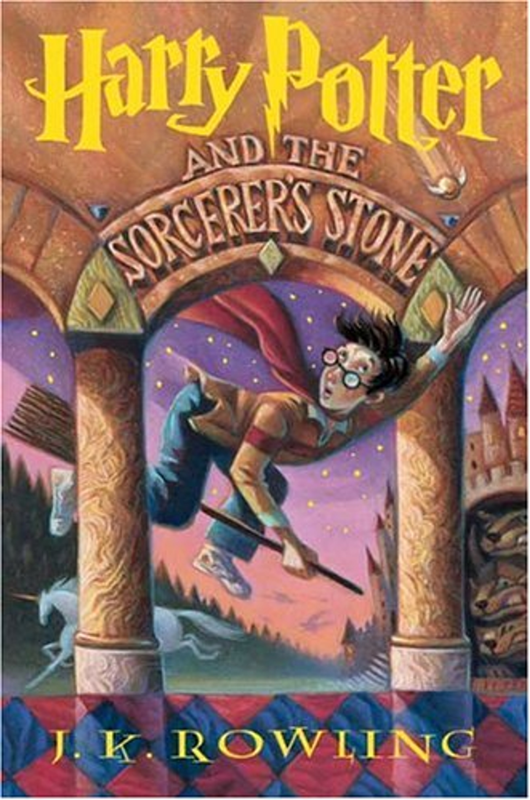

Overview of the Harry Potter Books
The story follows Harry Potter, a young wizard who learns of his magical heritage on his 11th birthday. Harry’s life changes forever when he receives an invitation to attend Hogwarts School of Witchcraft and Wizardry, a magical boarding school filled with wonder, mystery, and danger. Alongside his loyal friends Hermione Granger and Ron Weasley, Harry navigates the challenges of growing up while uncovering the secrets of his past and battling the dark wizard Lord Voldemort, who seeks to dominate the wizarding and non-magical worlds. Each book corresponds to one school year at Hogwarts, chronicling Harry’s journey from a naïve boy to a courageous hero destined to confront Voldemort in an epic battle.
Number of books
There are seven books in the Harry Potter series, each representing a year in Harry's journey at Hogwarts School of Witchcraft and Wizardry:
- Harry Potter and the Sorcerer’s Stone (1997): Harry discovers he’s a wizard. 
- Harry Potter and the Chamber of Secrets (1998): Harry faces a monster hidden in Hogwarts.
- Harry Potter and the Prisoner of Azkaban (1999): Harry learns about his parents’ past and meets his godfather.

- Harry Potter and the Goblet of Fire (2000): Harry competes in the Triwizard Tournament, and Voldemort returns.

- Harry Potter and the Order of the Phoenix (2003): Harry forms a resistance group against Voldemort
 .
. - Harry Potter and the Half-Blood Prince (2005): Harry uncovers Voldemort’s secrets and prepares for the final battle.

- Harry Potter and the Deathly Hallows (2007): Harry and his friends destroy Voldemort’s Horcruxes and face him in an epic final battle.
Five Fun Facts
- The Series Was Initially Rejected Before finding a publisher, Harry Potter and the Sorcerer’s Stone was rejected by 12 publishers. Bloomsbury eventually accepted it, and the rest is history!
- Platform 9¾ Is Real King's Cross Station in London has a special photo spot where fans can "enter" Platform 9¾ with a luggage trolley disappearing into the wall.
- Hermione’s Name Has a Teaching Moment To help readers pronounce Hermione's name correctly, Rowling included a scene in Goblet of Fire where she explains it to Viktor Krum: “Her-my-oh-nee.”
- Dumbledore’s Name Means “Bumblebee” The name “Dumbledore” comes from an old English word for “bumblebee.” Rowling imagined him humming to himself as he strolled through Hogwarts.
- Rowling Invented Quidditch After a Fight Rowling created Quidditch, the iconic wizarding sport, after an argument with her boyfriend. It became one of the most loved elements of the wizarding world!